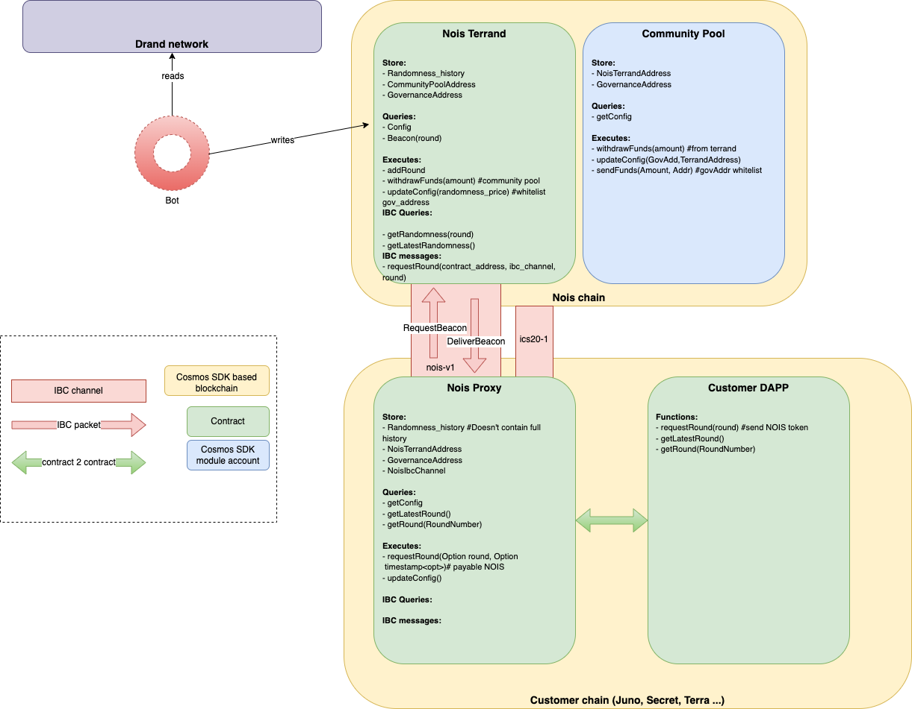

Nois Network
Nois Network aims to bring randomness (or noise) to the Cosmos ecosystem by providing a safe and secure entropy source and distributing randomness in the form of random beacons to other Cosmos blockchains via IBC.
Definitions
In this context we talk about public randomness, i.e. values that are unpredictable for all participants but once they are revealed, they are free to share. Private randomness that needs to be kept secret by one or some participants is out of scope for this document.
Abstract
Randomness is a basic building block for all sorts of applications. The use case ranges from lotteries that fully rely on randomness over games that may have some random elements to probabilistic modeling, simulations and governance applications.
Blockchains are systems in which every node in a decentralized network can validate the state of a replicated database by independently executing transactions and comparing the results. In order to do that, all computations need to be deterministic. The operations performed on blockchains get more sophisticated every year. While Bitcoin only allows token sends, the next generation brought Turing-complete computations on chain (Ethereum), creating complex financial products and the first governance applications. Today we are seeing this idea leveraged more and more as the price for execution drops significantly on Layer 2 solutions and independent blockchains in Cosmos1. The usage of WebAssembly brings a sandboxing technology to blockchains that was designed to run at near native speed on today's CPUs (CosmWasm, NEAR). Multiple projects are working on rich governance applications and games2.
Within these new applications, the access to a secure public source of randomness has been an unsolved growing need. For example, games need randomness to distribute new random items as NFTs in game or lottery platforms need true unbiased randomness to draw the winner. Unfortunately, current applications draw randomness from insecure sources such as block hash and timestamp.
In this document we describe how Nois brings publicly-verifiable, unbiasable and decentralised randomness on chain and distributes it to a multitude of other IBC enabled chains in a very secure, fast, decentralised, cost-efficient, and developer-focused manner.
Footnotes
1 Cosmos referes to the ecosystem of independent blockchains that communicate via IBC, not the Cosmos Hub.
2 TODO: provide examples
The Naive Approach
Blockchain applications can access certain information from the environment, that are deterministic and appear to be random at first glance. But usually those values are predictable or can be manipulated. E.g.
- Solidity's
block.timestampcan be set by the miner. - Solidity's
blockhashis a value the miner can influence. - The block time of Tendermint (BFT Time) is of low entropy and can be influenced.
- CosmWasm team decided to not expose block hash as this may falsely be assumed to be unpredictable but can be influenced by the block proposer.
- Block height has very low entropy as the height in which a transaction is included can be guessed.
- Another thing that was spotted in the wild is using signatures as randomness. A pre-defined signer is asked to sign a given challenge. However, it turns out that common signing algorithms produce a deterministic but not unique signature, such that the signer can choose whatever value suits them.
To get reliable randomness, we need to rely on better technology which may not be embedded in the native blockchain.
Our Approach
Nois Network aims to provide a safe and secure solution native to the IBC world and to provide the best possible user experience for a wide range of applications.
In contrast to other consensus algorithms, Tendermint-based blockchains do not need or provide randomness at block production layer. Therefore, for our first iteration, we are building our stack entirely on the application level of the chain (i.e. as a collection of smart contracts and offchain bots). This design decision makes it really easy for developers to use our technology since randomness can be consumed onchain only via the usage of a simple library.
In the first iteration, Nois will use random beacons produced by the drand network, which is powered by a consortium of participants that generate randomness using multi-party computation. Each randomness is associated with a round and is delivered periodically, i.e. there is a bijective mapping between the drand round and the wallclock time. The randomness is based from BLS threshold signatures, which produces unpredictable values that cannot be manipulated by any of the drand participants. The drand mainnet is instantiated by the Legue of Entropy, which has been operating it in production for more than two years. For example, Filecoin relies on drand for block production and its storage proofs.
Drand random beacons can be submitted to blockchains that perform BLS signature verification. This way, we can build a random oracle that securely brings randomness on chain. This method was described and proven in 2020 for CosmWasm. A few months later, this proof of concept was turned into production by Terrand. BLS verification is a computationally heavy operation, but leveraging the strength of the Rust optimizer and Wasm's near native execution speed, Drand beacons could be verified for less than $3 in gas fees on Terra.
The next step in the evolution is to make drand beacons easily accessible by as many dapps as possible in a way that is easy to use and affordable. In an ideal world, a dapp developer would just do something like this:
#![allow(unused)] fn main() { // pseudo-code let beacon: [u8; 32] = await getRandom(); }
We believe the burden of implementing drand verification once per contract or even once per blockchain is too much in an ecosystem that is preparing for thousands of independent and interconnected blockchains. Instead of executing the drand verification on the chain of the dapp, the Nois chain is acting as the randomness layer in the Cosmos ecosystem which is available via IBC.
Architecture
 Multiple actors are involved in the Nois system:
- Nois validators: these are the nodes that create and validate blocks on our chain. They are responsible for executing the transactions and run a consensus on the output.
- Nois bots are responsible for fetching the randomness from the drand network and submits it to the Nois smart contract that verifies it.
- Nois smart contract contains the logic to verify a drand randomness, but also to incentivize the Nois bots and is the recipient of any IBC calls made on other chains.
- Nois proxy contract lives on any end user chain (e.g. Juno, Osmosis etc) and is the main entry point for users to fetch randomness from.
- IBC relayers are responsible for relaying the randomness from the Nois smart contract to the Proxy contract.
Workflow
The following steps are taken to get the randomness:
- A contract on a CosmWasm-enabled chain sends a message to a Nois proxy contract on the same chain. A reply with further information regarding the job is sent to the original contract.
- The proxy contract sends an IBC message to its counter-part on the Nois Network, where the job is put in the queue.
- Once the drand beacon of the correct round is released, Nois bots send it to the Nois smart contract for verification, as a transaction.
- After successful verification, the pending jobs for the round are processed. For every matching job, an IBC response with the beacon is sent, thanks to the IBC relayers.
- The proxy contract receives the beacon and sends a callback to the original contract.
Security
Nois Network provides an unbiasable publicly verifiable source of randomness to dapps. We assume the following threat model:
Security of the drand network
At the moment, the Nois Network relies on the drand network. Drand relies on honest majority assumption, i.e. more than 50% of the drand operators must be honest, and so far this assumption has held in practice thanks to the variety in terms of nodes: different jurisdictions, platforms, OS, and deployments. Drand has stood up through time as it is being used by multiple projects, including the popular Filecoin blockchain for more than 2 years without a single downtime.
Security of the Nois Network
This is a new Cosmos based chain and therefore there is a list of validators responsible for running the consensus. On Cosmos the validators are ranked by reputation (highest uptime, number of chains etc). This list provides a reliable source of validators already. The consensus relies on the supermajority assumption, i.e. 2/3 + 1 of total stake must be held by honest validators. In the future, we want to expand our validator set to be more permissionless but also containing some independent organizations similar to the drand network.
Given these two assumptions, the security of the model is pretty straightforward:
- The Nois smart contract guarantees the correct verification of any beacons submitted to it.
- The Nois chain guarantees the correct logic execution of the Nois smart contract, i.e. it will reply to IBC beacon requests with exactly the correct beacon, already validated
Application Security
Similar to regular applications, handling randomness is not a trivial task, and a large number of vulnerabilities have had origins in the way to handle randomness. Dapps need to have a randomness which has not been seen or biased with until a certain point in time. For example, take a lottery dapps, no one should know the randomness before the time allocated, otherwise one can cheat easily by submitting the right ticket. At the time the lottery finish, a dapp should ask for the next randomness being available. This is exactly the main API endpoint Nois contracts are offering. This reduces the chance of using the randomness source "insecurely".
We may also offer a "getRandomness(round)" endpoint that is to manipulate with care, only for dapps developers that exactly know what they way, as this can be useful for a certain number of use cases still.
Performance
Commit to Callback Time (C2C Time)
Each Drand round is published at fixed points in time, calculated as follows:
publish_time := genesis + (round - 1) * roundTime
where genesis is the drand network's start time (UNIX timestamp), round is an incrementing integer starting at 1 and roundTime is the drand round time in seconds. At the beginning, roundTime is 30s but the drand project is planning to release a new network with much higher frequency (3-6s).
Once this publish_time is reached, the randomness needs to be considered public. No matter if the chain or the contract knows the value already, any user can know the random value by observing the off-chain drand network. So it is important that after publish_time no actions for that round are allowed anymore. Think of it as closing submission of lottery tickets. Now the round should be processed as fast as possible in order to reveal the results and allow to continue the operation in case the next steps depend on it.
The time between beacon publishing an the callback consists of the following components:
- Nois bots submission: bots should observe the drand gossip network through various communication protocols. Once a new round is found, they should craft a transaction, sign it and sent it to the Nois mempool. Note that only the fastest submission of one of the bots matters. When well-connected, this should be doable in under 1 second. This layer is completely permissionless, anyone can participate and get compensated for this work.
- Block inclusion time: When the beacon is in the mempool, the chain should ensure it is included in a block as fast as possible. With 5-second block times and an inclusion in the first or second block, this should be up to 10 seconds. The same transaction processes pending jobs and sends IBC messages. The block is executed in well under 1 second.
- IBC relaying: An IBC relayer picks up the message from the Nois chain and relays it to the destination chain. This depends on well configured and well-connected relayers as well as availability of block space on the destination chain. In order to be included as fast as possible, the relayer should pay a transaction fee that is accepted by all validators. But in a high traffic situation, we don't get guarantees to be included quickly. So 5-20 seconds is a reasonable estimate.
- Acknowledgement: An IBC acknowledgement is sent to Nois, but this is nothing the contract needs to wait for.
Once those steps are done, the callback is executed within 30 seconds of publishing. On a well configured network, and depending on the block time, average timings can be much faster though.
Choice of round
The application needs to commit to a round number before the beacon is revealed.
Fortunately we have a reliable BFT Time but this is not perfectly accurate and can be behind. In case the contract thinks publish_time is not yet reached while the beacon is already published, an attacker can abuse the knowledge of the randomness. So we introduce a duration safety_margin and require publish_time to be at least safety_margin after the current BFT time (block_time).
Using the formula from above, we want
(1) publish_time := genesis + (round - 1) * 30
(2) publish_time >= block_time + safety_margin
genesis + (round - 1) * 30 >= block_time + safety_margin
(round - 1) * 30 >= block_time + safety_margin - genesis
round - 1 >= (block_time + safety_margin - genesis) / 30
round >= ((block_time + safety_margin - genesis) / 30) + 1
This inequality is satisfied when doing
round := ceil((block_time + safety_margin - genesis) / 30) + 1
Assuming safety_margin is set generously to 2 seconds, the round calculated that way is 2-32 seconds in the future.
This calculation can be generalized if an end time should be set in advance instead of closing right away. With flexible end times, the publishing times of beacons can be matched, and only the safety margin need to be considered.
Short Block Times
The Nois network can consider reducing block times from the typical 5-7 seconds in Cosmos to something shorter. Doing so has to be carefully tested in environments with many globally distributed validators. Fortunately, there has been teams successfully testing 1s block times and thus we believe it's a viable path forward. 1, 2, 3
Process all drand rounds
The time between the publication of a random beacon and when it becomes available on chain is important for the user experience. Depending on product design, this may be the time an end user is staring at a spinner waiting for a result. For a great UX it is crucial to have a fast bots that are well-connected to drand nodes using various transports (HTTP, pubsub, gRPC) and submit a transaction to the Nois chain containing the beacon immediately when they first see it.
If the bots had to scan the Nois chain or even various customer chains to check if a round was requested, valuable time is lost. A beacon request might already be in a mempool but is not yet committed to a block. Or it is in a block but the block's events are not yet indexed.
By processing all drand round on the Nois chain, we remove communication overhead and speed up processing of each round. At the same time, we optimize the chain for drand verification, ensuring this does not lead to performance or storage issues.
Cost Efficiency
Nois uses highly efficient Tendermint, IBC and CosmWasm technology to provide a cost-efficient solution to users.
Verify on each app chain
An alternative approach to verifying the beacon on one chain and then distributing it across chains would be to verify the beacon once per app chain, i.e. have a Terrand-like instance on Terra, Juno, Tgrade, …. The bot network would then need to submit the beacon to each chain. This would remove the need for a Nois chain and IBC relayers. It could also remove the time between publication and callback.
However, drand verification consumes a lot of gas and doing that once per chain is potentially inefficient. When blockspace is limited, the beacon submission transaction might not get committed for a long time.
There are pros and cons on both sides. When thinking about hundreds of connected app chains, the deduplication of the verification feels right. With IBC queries upcoming, our state becomes your state and thus it makes sense to have one "randomness" chain accessible from all chain very easily.
The app chain model
A drand verifier that is accessible via IBC can be implemented on an existing chain with CosmWasm. This would be easier to start with and would not require a new token. However, going for a custom app chain has the following motivation:
- Cosmos is an ecosystem of app specific chains where creating one chain is relatively easy. The mentality in the ecosystem is to have many chains that are independent and interconnected. The tooling and people are ready for many chains.
- In a world with competing app chains that host our users, running on one of those chains makes us biased towards this chain. Being neutral regarding chains is very helpful in politics.
- The randomness chain would not halt if the smart contract chain halts.
- The ability to create overlapping validator and drand MPC sets is a way to incentivise drand node operators and get new players into Cosmos.
- The following optimizations are possible:
- The drand verification contract is 550 KB large. Terrand had to split the code in two contracts to deploy it to Terra. A custom chain can allow larger contract sizes and we now have the logic implemented in one contract.
- The verification consumes significant block space and may get expensive on other general purpose chains.
- CosmWasm allows pinning contracts. Those contracts are kept in memory and are loaded and executed faster. We can utilize this feature on a custom chain, and we can also reduce the cost of verifying the beacons.
- CosmWasm has a somewhat unknown cronjob feature that allows governance to run contract execution in every block. That’s useful to e.g. process queues.
- We can use chain governance to upgrade the contract, which is more transparent and safer than multisig upgradability.
- Due to permissioned contract uploads, the use of a Wasm compiler with unbound compile time becomes possible, which can lead to faster verification.
Developer Friendly
Noise Proxy Contract
Nois is meant to be a layer on top of which dapps can tap into. Therefore, its usage must be as simple as possible and not less. In this spirit, our proxy contract have a main entry point:
getNextRandomness()
which will automatically calculate the next drand round and return the associated randomness via an IBC callback. The developer does not have to think about when should he ask randomness nor how. We believe that this single API call will be able to fit most uses cases using randomness onchain. The API is also offering more advanced entry points that need to be dealt with care for specific applications.
Library
On top of this API, we offer a general toolbox that offers a handful of methods such as:
randFloat(seed)that derives a random number between 0 and 1 from the randomness seedrange(seed, min, max)that returns a random integer in the[min,max(rangeshuffle(seed, list)that shuffles a given list given the randomness seed
The team have seen many insecure implementations of these functions in the wild, and we believe it is important to provide them as part of the Nois ecosystem to incentivize dapps developer to create secure and robust applications.
Further Work
The solution above explains what we can do with technology available today. But we'll not stop there. The next steps might be the following (unsorted).
IBC Queries
We'll closely follow the development of IBC queries, which is a technology we assume to allow for faster round trips and lower fees.
Alternative Entropy Sources
We love what drand and the League of Entropy brought to the internet, which is nothing less than the first decentralized entropy source. But choice is important. Some applications may wish to sacrifice some of the security properties in order to get faster and cheaper randomness. Some users might demand governance voting for drand MPC participants. The options are to be explored, but the network will be designed for multiple sources.
Internalizing randomness generation
The node operators of the Nois Network could integrate randomness generation into their own operations. There has been work to integrate random beacons into Tendermint that could be explored. But also a second process that runs along with the validator node would be an option.
More features
Drand is releasing a timed encryption feature that is using the drand randomness as a basis. Integrating that with Nois Network would make sense and offer the first timed encryption feature on the Cosmos ecosystem.